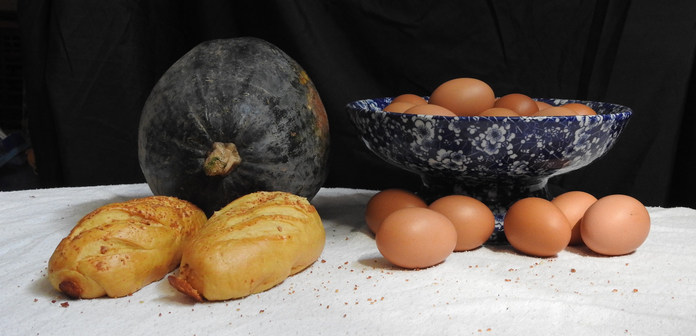

Introducción
Estas fotos tienen un tema un poco más libre: no narran los eventos de ningún libro en específico, pero más bien tratan uno de los ambientes que se muestra en él. El libro en cuestión es El nombre de la rosa de Umberto Eco, que toma lugar en el año 1327, en la Alta Edad Media; el ambiente a plasmar es el interior de la abadía en la que toman lugar los eventos. Para obtener este efecto, he escogido utilería que recuerde a esos tiempos, como la mesa o la jarra; y he hecho el fondo oscuro para recordar a la catedral, un espacio alto y ancho que no deja pasar mucho la luz.
También, a propósito de experimentar con la composición y la regla de tercios, he decidido hacer bodegones. Incluyo también la rejilla de la regla de tres para ver más fácilmente este efecto en las fotos.
Bodegón 1


En esta foto no hay ningún elemento que resalte en específico - todos tienen las mismas dimensiones, o están agrupados con objetos similares que crean un conjunto más grande. Así que la regla de tres enfatiza a todo el bodegón: los puntos más altos y más bajos de los objetos están ubicados aproximadamente en las dos líneas horizontales (en rojo).
Bodegón 2

Todos los cuatro objetos de este bodegón (la auyama, el bol, los panes y los huevos caídos) se encuentran en las intersecciones de las rejillas (en rojo), aunque solo tres de estos son importantes: los huevos caídos son solo decoración para el bol de huevos, y no se enfatiza tanto como los demás elementos.
Bodegón 3


En esta imágen resaltan dos elementos: la auyama y el bol de huevos. La auyama cae en los dos puntos de intersección de la derecha (en rojo), y los huevos en los dos de la izquierda (en naranja); sin embargo, la regla de tres solo enfatiza al bol, ya que los puntos de intersección de la izquierda caen en los bordes superior e inferior del bol (sin contar el soporte, que es bloqueado por las verduras), así que no es tan efectivo (más bien el bol es enfatizado por su posición vertical central, no por la regla de tres).